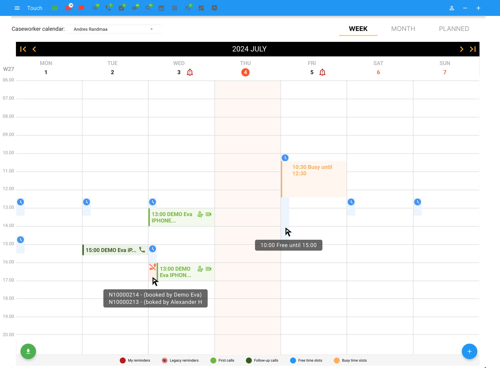
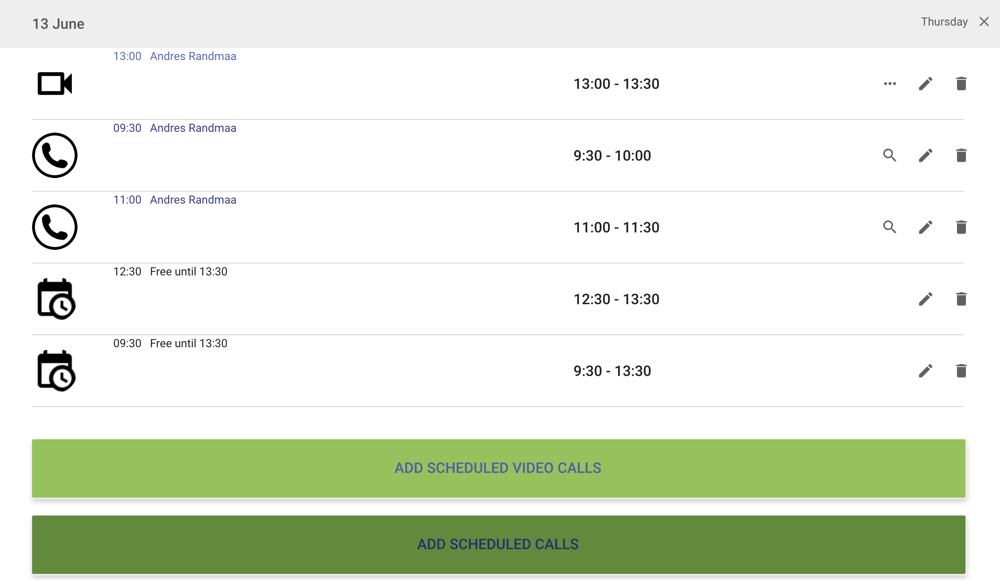
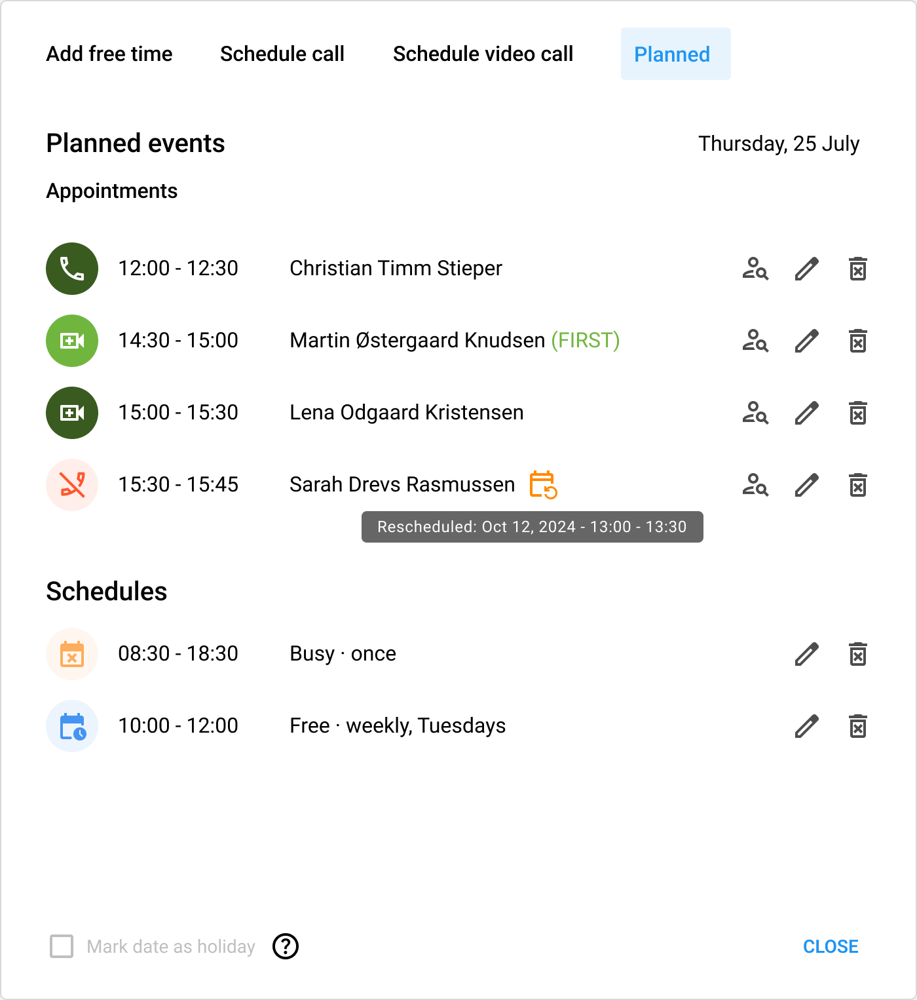
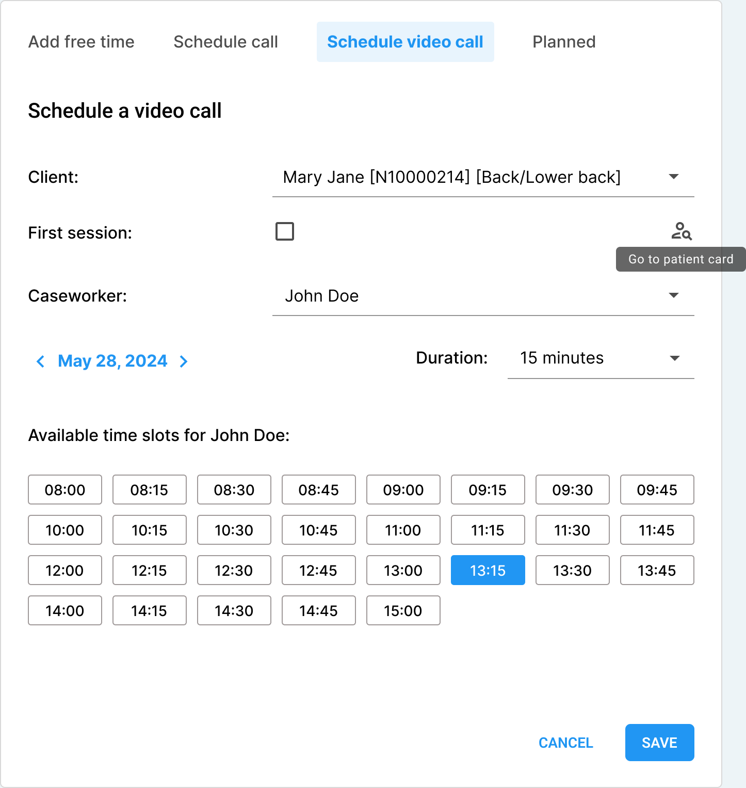
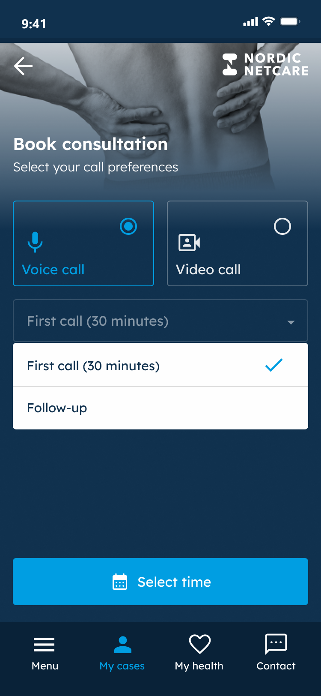
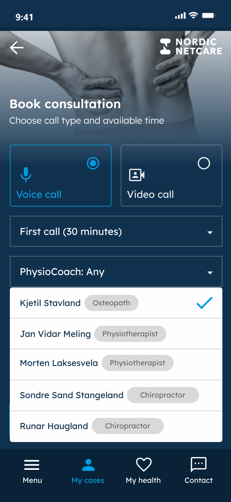
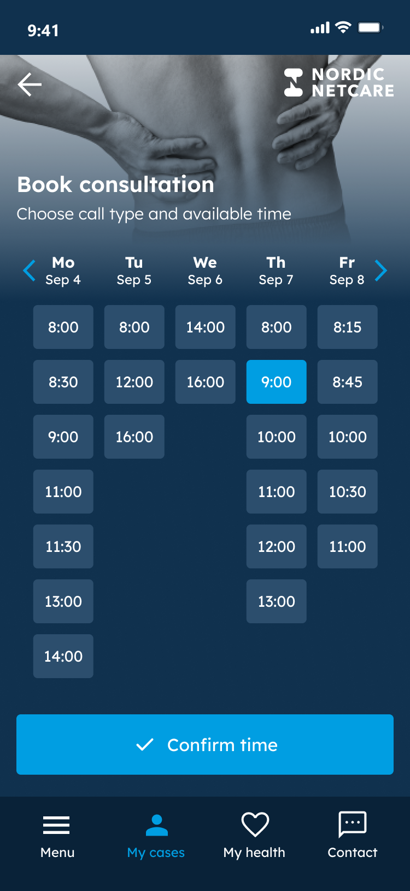
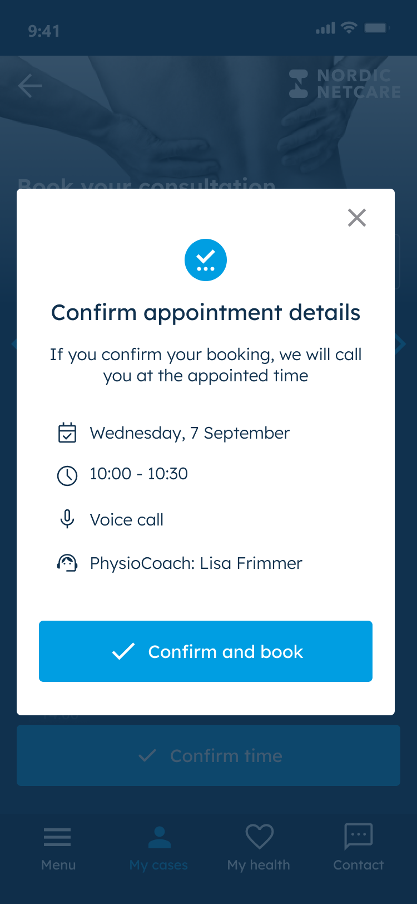
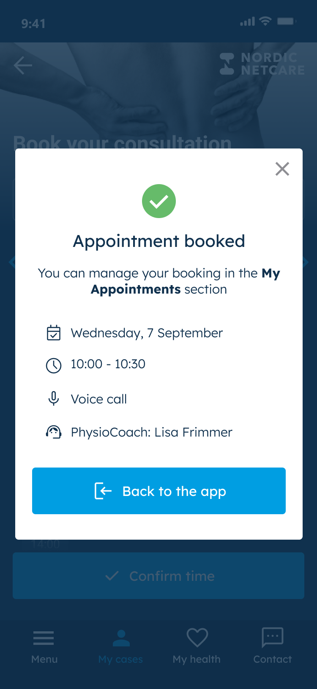
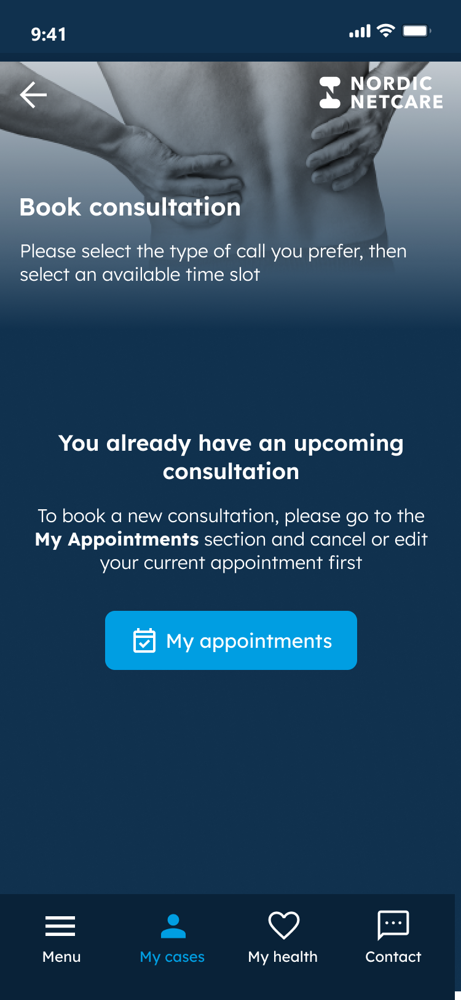

Case study 01 · Nordic Netcare
Asked for Calendly, fixed the scheduler instead
The co-CEO proposed replacing our confusing in-house scheduler with a Calendly integration. I looked for the actual problem first, and we redesigned the scheduler we already had.
- Problem
- Case workers found the in-house scheduler confusing, and the co-CEO proposed replacing it with Calendly.
- Decision
- Redesign the scheduler we had (week view, legend, one-step booking) instead of buying; the co-CEO and COO signed off.
- Result
- The calendar became case workers’ main task list for the day, with no new subscription, as observed in day-to-day use.
01The problem
The practice management system had its own scheduler, and case workers, physiocoaches among them, found it confusing. It had a month view only, with each day’s appointments crammed into slots that could not expand. Colours marked appointment states and cancellations, but with no legend and no consistent meaning. The co-CEO proposed replacing it with a Calendly integration.
02Why I did not buy
Calendly would not have removed the work, only moved it. Our processes would have had to be mapped onto it, it would have needed integrating with the other scheduling features and with patients’ cases and records, and it would have added another subscription and another SLA.
So I looked for the actual problem. I watched and talked to case workers and used the scheduler myself. The pain points were design problems, not a missing product: people could not see their day, and could not tell a booked appointment from a cancelled one.
03The design
The practice management system is an internal tool, so the design work went into speed and clarity for case workers (fewer clicks, clearer controls), not visual polish.
I made quick mockups in Figma, borrowing patterns people already knew from Google Calendar, Apple Calendar and Calendly itself:
- A week view, alongside the month view, where appointments of 15 minutes to an hour have room.
- Colours for call types and appointment states (booked, cancelled, expired), with a legend, so they read without being learned.
- Free and busy time shown directly on the calendar.
I showed the mockups to case workers for feedback before anything was built, and argued that most of the improvements were simple and cheap to make. The co-CEO and the COO reviewed the proposal and both signed off. We built it behind a feature flag, piloted it with a group of case workers and stakeholders, and then rolled it out to the whole team.
The week view
The calendar opens on the week. Each call sits at its time with room for the client’s name, the colour and icon say what kind of call it is, and free and busy time are blocks on the grid. A legend along the bottom explains the colours.


A day at a glance
Opening a day used to show every event in one list, in no particular order: calls, video calls and free time mixed together, with three large “Add” buttons below. The redesigned day view groups events into reminders, appointments and recurring schedules, sorts them by time, and marks what matters for the next step: a first session, a cancelled or rescheduled call, a day marked as a holiday.
Before


After


Booking a call
Booking used to take two dialogs. The first picked the client and case worker and showed a date. Saving opened a second one with three collapsible sections, “Quick selection”, “Assigned CW TimeSlots” and “Customize…”, and the free times were inside one of them. The redesigned dialog does it in one place: client, first session, case worker, date and duration, then the case worker’s free time slots as buttons. Changing the date or the case worker updates the slots, and a holiday says there are none.


After


04The patient side: booking a consultation
The free times case workers manage in the scheduler are what patients book from in the patient app. The practice management system had little need or drive for visual polish; the app, which patients use, is a different story, and its booking flow is built from the app’s components.
The patient makes one decision per step: voice or video, first call or follow-up, which physiocoach, then a free time from that person’s calendar. A confirmation sums up the date, time, call type and physiocoach before anything is booked.








The cases around it
After booking, the patient is told where to manage the appointment. If they try to book while one is already scheduled, the app says so and sends them to their appointments to change or cancel it, instead of letting a second booking through.




05The result
The calendar became the case workers’ main task list for the day. Before, most ran their day from the patient case view or a separate to-do list, because the calendar was too hard to read. Cancelled appointments became trackable, and booking mistakes such as scheduling the wrong client became less common. No new subscription was added.